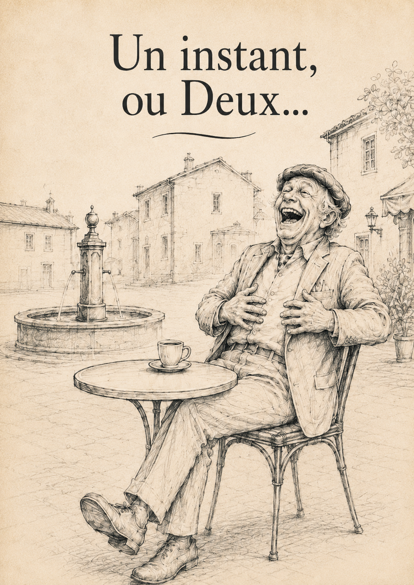
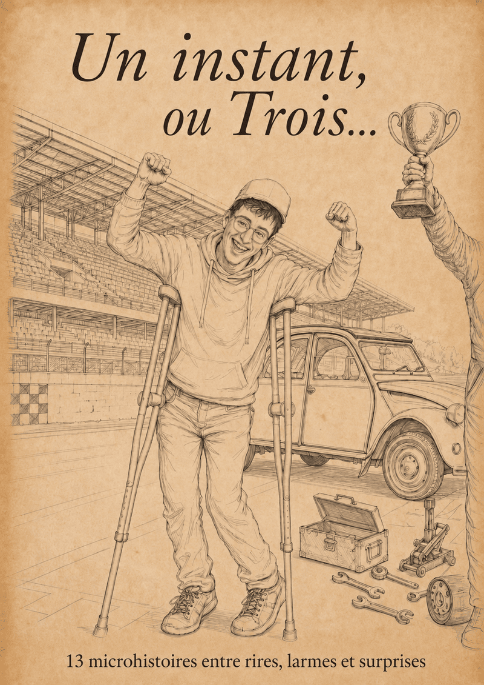

Auteur
Auteur
Livre technique
Cette maison
Un livre concret pour regarder une maison autrement : comprendre, repérer et mieux appréhender ce qui se cache derrière les murs.
Découvrir ce livre →Bienvenue sur le site des Microhistoires de Roy Van Mil. Des histoires audio vous sont spécialement dédiées si vous êtes aveugle ou malvoyant, pour vous surprendre, sourire ou pleurer. Le premier lien ci-dessous vous conduit directement aux histoires à écouter.
PAGE AUDIO — pour aveugles & malvoyants Des histoires à écouter gratuitement • lecture d'écran intégréeUn livre concret pour regarder une maison autrement : comprendre, repérer et mieux appréhender ce qui se cache derrière les murs.
Découvrir ce livre →
16 microhistoires à découvrir séparément, selon votre humeur et votre curiosité.
Entrer dans le livre →
De nouvelles microhistoires, de nouvelles rencontres et leurs coulisses.
Entrer dans le livre →Un autre rythme, une autre atmosphère. Un roman où le mystère s'installe doucement et où certaines choses semblent refuser de rester silencieuses.
Découvrir le roman →J'ai créé une cagnotte pour aider à financer l'enregistrement professionnel d'histoires gratuites destinées notamment aux personnes aveugles et malvoyantes.
Retrouvez les histoires déjà disponibles en version audio.
Écouter →Découvrez pourquoi cette page a été pensée pour les personnes aveugles et malvoyantes.
En savoir plus →Vous avez lu ou écouté une histoire ? Découvrez les avis et laissez le vôtre.
Voir les avis →La cagnotte aide à financer de nouvelles histoires audio enregistrées par une vraie voix professionnelle et mises gratuitement à disposition.
Voir la cagnotte →